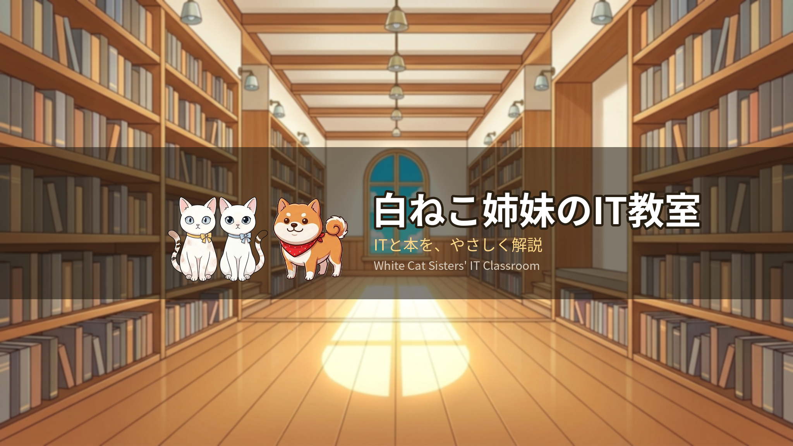
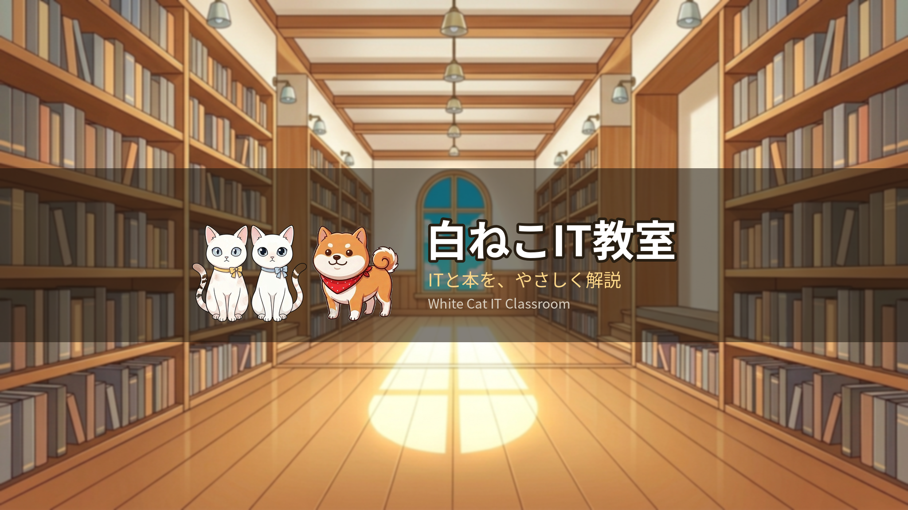
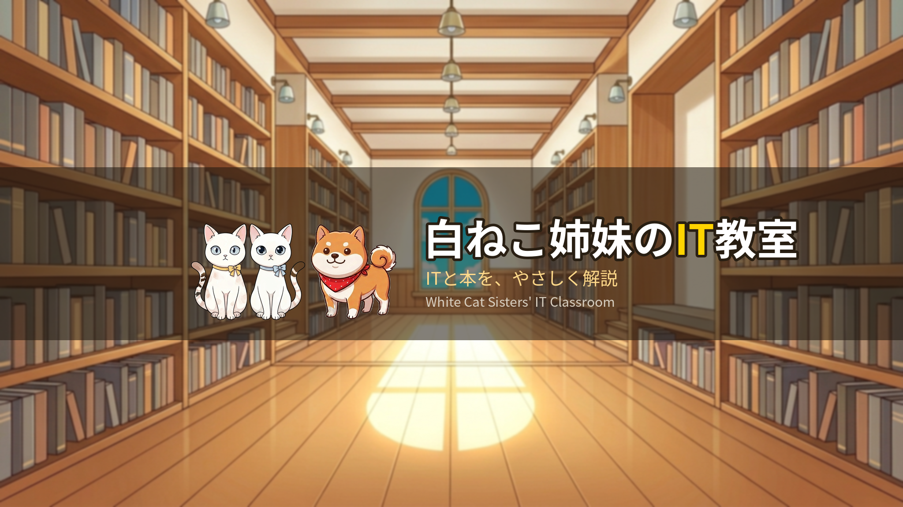
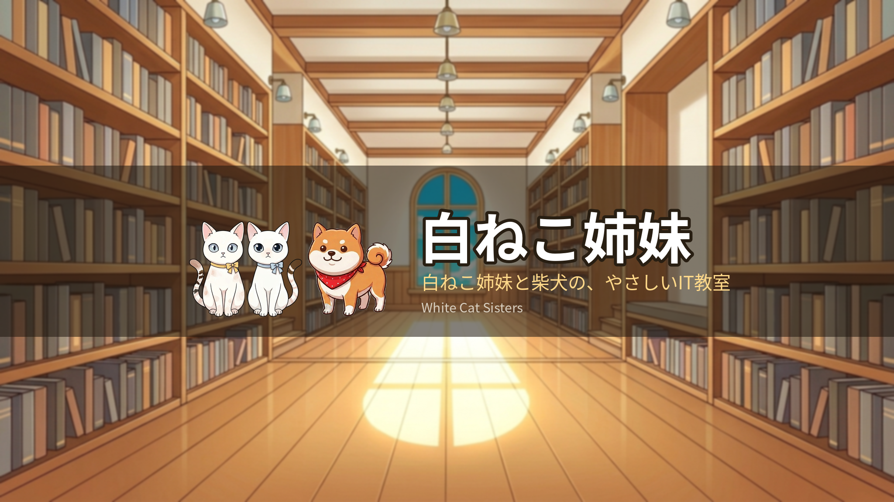
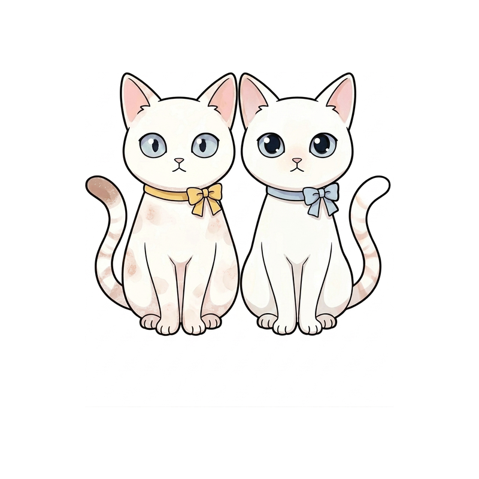
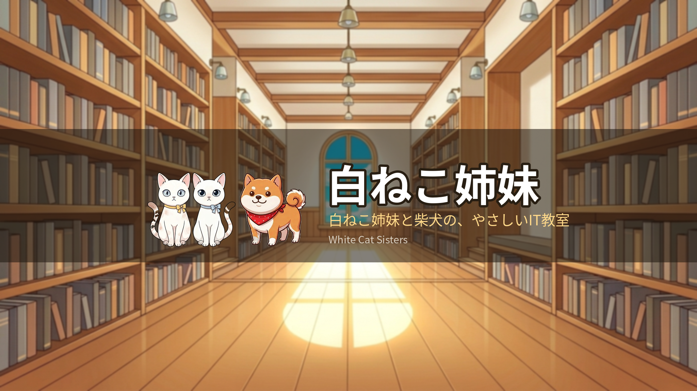
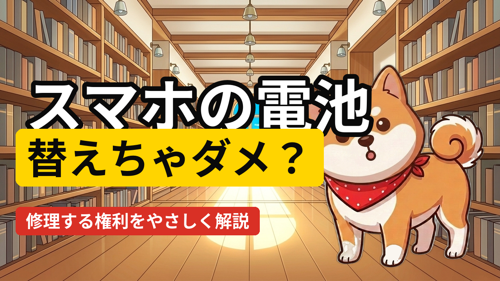
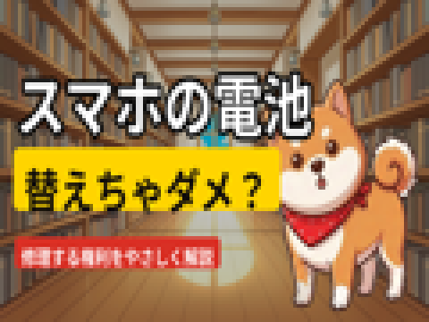

手順は penguin-lane の docs/launch-runbook.md。メタデータは content/meta/V001_meta.md
A=現行 / B=短縮 / C=姉妹を残してITを色でなじませる案

A: 白ねこ姉妹のIT教室

B: 白ねこIT教室

C: 白ねこ姉妹のIT教室（IT=黄色アクセント）

D: 白ねこ姉妹（チャンネル=キャラブランド、番組はシリーズ名で運用）



